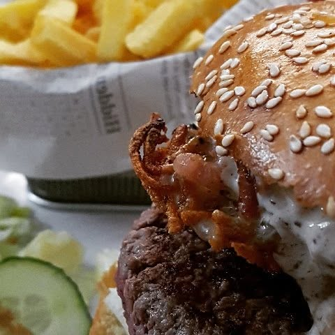
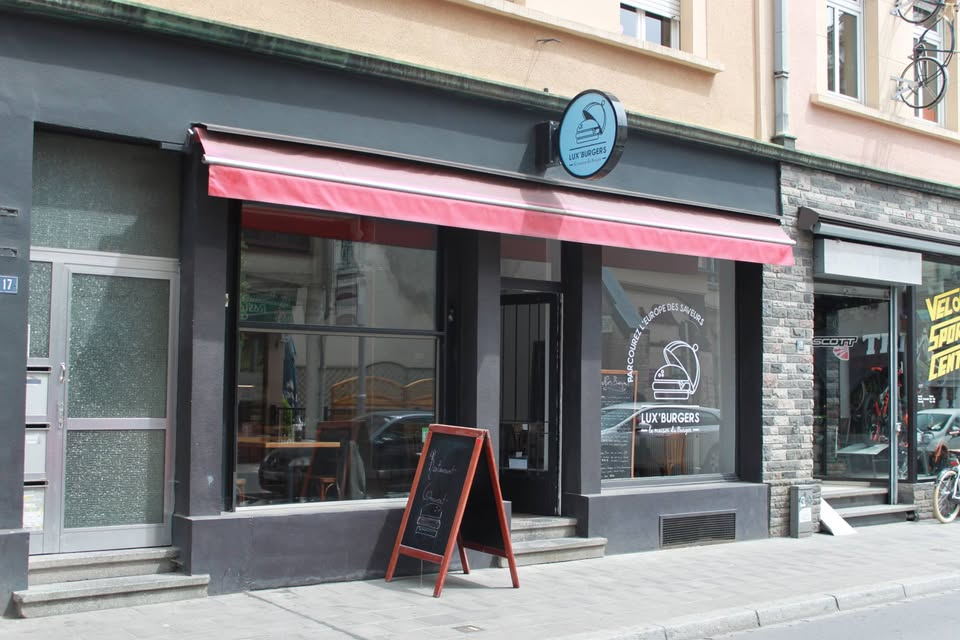
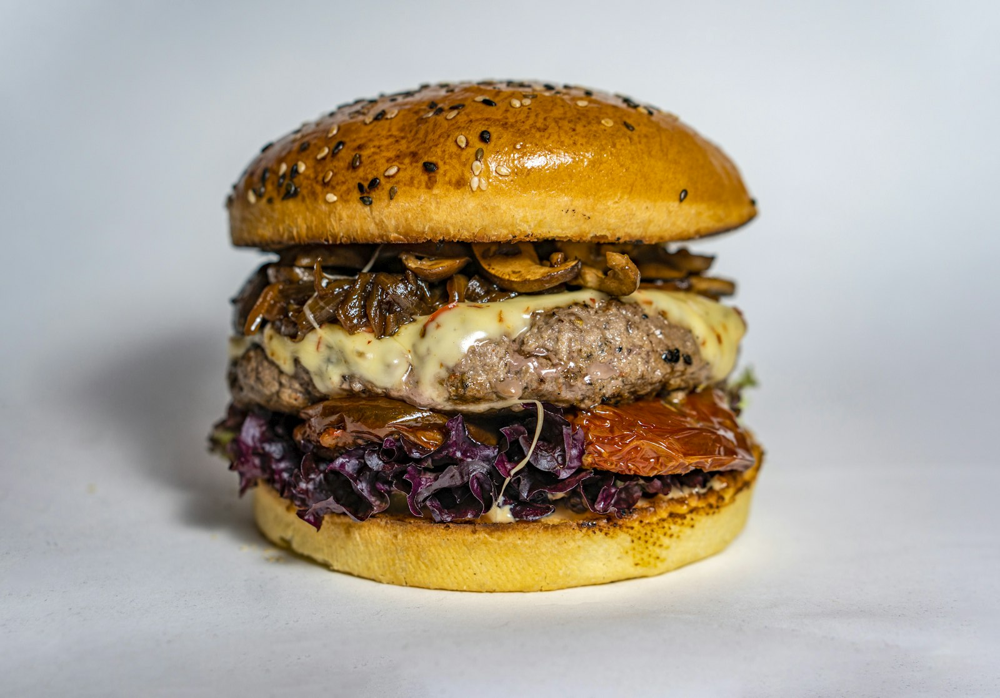

Notre Histoire
Faits main, épuisés au déjeuner.
1
Bœuf luxembourgeois
Issu de fermes luxembourgeoises et haché pour nos steaks — jamais congelé, jamais anonyme.
2
Frites belges, gras de bœuf
Cuites deux fois, à la belge. L'accompagnement que personne ne laisse.
3
Sauces faites ici
Toutes nos sauces sont faites en cuisine. La sauce maison vaut à elle seule le détour.

